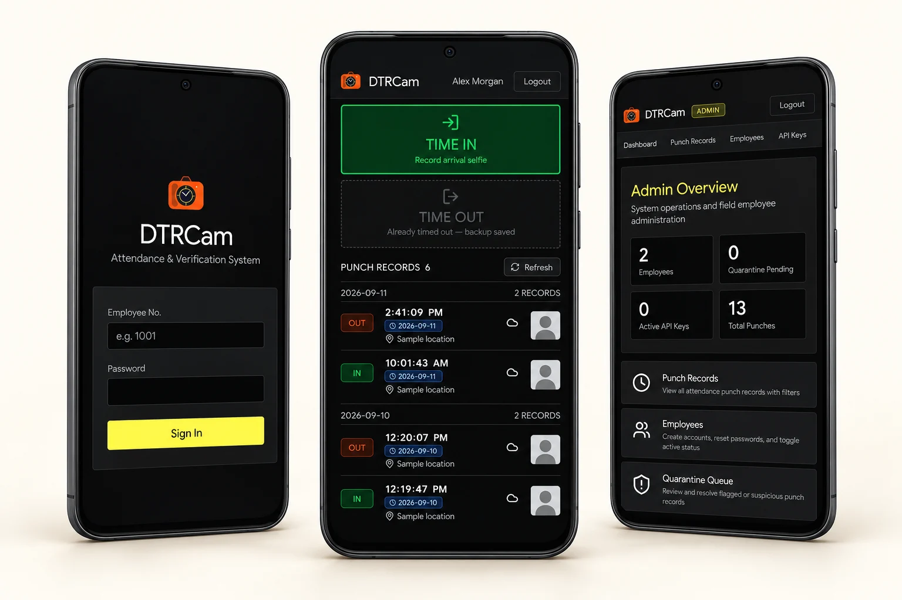

Time in, time out
Employees have an uncomplicated view for recording arrival or departure, including a camera-based attendance flow.
Attendance that keeps up
with the workday.
DTRCam keeps the attendance flow focused: employees record a time-in or time-out, while administrators can review punch records and manage the people behind them.

Attendance should fit into a workday—not ask people to work around it.
DTRCam is designed around a narrow, repeatable flow: sign in, select the right attendance action, and capture the record. The employee-facing view stays straightforward while the admin area gives the team a clearer place to review activity.
The project also considers what happens beyond the ideal connection: records can be kept locally and synchronized when the application is able to reach the server again.
Built around the everyday employee
and the person reviewing the data.
Employees have an uncomplicated view for recording arrival or departure, including a camera-based attendance flow.
Punch history gives administrators a dedicated place to inspect attendance entries and follow up on exceptions.
Local capture and a sync queue help preserve attendance records when the network connection is temporarily unavailable.
SvelteKit provides the interface and routes, with the layout designed to be comfortable to use from a phone. Supabase supports the application’s data and authentication needs.
An IndexedDB-backed queue holds locally captured records until the application can synchronize them. The aim is simple: a temporary network problem should not lose someone’s attendance record.
The project can run through a Docker build and Compose setup, with environment values kept outside the source repository. It is exposed on the local network through a Caddy reverse-proxy route.
The screens above use generated sample names, locations, and profile images. They illustrate the application’s workflow, not real employee data.